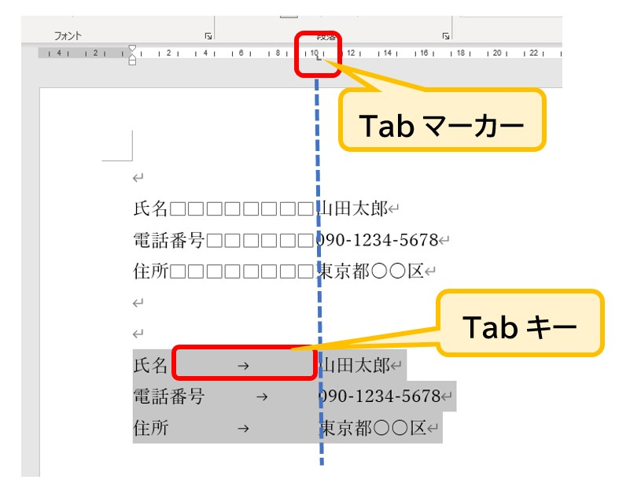

WordのTabキーとは？
～文字をきれいにそろえる「Tab」の基本～
Wordを使っていると、「タブ」という言葉が出てくることがあります。でも、Wordを始めたばかりの人にとっては、「タブって何のこと？」となりやすい言葉です。
さらにややこしいのが、キーボードには「Tab」キーがあります。ここでは最初に、この2つを区別して覚えておきましょう。
「タブ」と「Tabキー」は別もの
この記事では、次のように呼び分けます。
- 「タブ」： Wordの上にある、「ホーム」「挿入」などのメニューを切り替える部分のことです。
- 「Tabキー」： キーボードの左側にある、Tab と書かれたボタンのことです。
「タブ」＝ Wordのメニュー画面の切り替え
「Tabキー」＝ 文字の位置をそろえるためのキー
最初はこの2つを区別できれば十分です。
Tabキーは何をするキー？
Tabキーを一言で言うと、「文字と文字の位置をきれいにそろえる」ためのキーです。
例えば、氏名、電話番号、住所などを縦に並べて書くとき、初心者のうちはスペースを何個も入れて位置を調整することがあります。しかし、これでは文字の長さによって端がガタガタにずれてしまうことがあります。
電話番号Tab090-1234-5678
住所Tab東京都○○区……
Tabキーを押すと、カーソルが**「次の決められた位置」まで一気に移動**します。そこから文字を書き始めることで、どんなに前の文字の長さが違っても、後ろの文字の開始位置をピタリとそろえることができます。
Tabは「伸び縮みするゴム」のようなもの
Tabの動きをイメージするときは、伸び縮みするゴムを思い浮かべてみてください。文字と文字の間にTabを入れると、そのTabが必要な分だけ伸びたり縮んだりして、次の文字を始める位置まで間を埋めてくれます。
「単にすき間を作るもの」と考えるより、「次の目印までカーソルをワープさせるもの」と考えるほうが実務では正確です。
「スペースを何個入れればそろうかな？」と悩む時間はもったいないです。「ここはTabでそろえよう」と判断できるようになると、Wordでの文書作りがぐっと楽になり、修正しても崩れない「強い書類」が作れるようになります。
ルーラーでTabの位置を決める
Wordには、画面上部に「ルーラー」という目盛りがあります。これは文字を配置するための「ものさし」です。このルーラー上で、「Tabキーを押したら、ここまで移動してほしい」という位置を指定できます。
L字マークを「マーカー」と考えてみよう
ルーラーをクリックすると表示される小さな「L字のマーク」。これはTabの目的地を示す「マーカー（目印）」です。
ルーラーにマーカーを置く → Tab キーを押す → マーカーの位置までカーソルがワープする

▲ 【画像1】ルーラーをクリックして、Tabの目的地（マーカー）を設定した様子
ルーラーにマーカーを付ける方法
- 「表示」タブをクリックし、「ルーラー」にチェックを入れます。
- ルーラー上の、移動させたい位置（例：10文字付近）を直接クリックします。
- L字のマーカーが表示されたら設定完了です。文章中で Tab キーを押してみましょう。
tabキー押したのにワープしない場合は、ルーラーをよく見てください。「L字のマーカー」が本当にそこにありますか？ もし無ければtab打ちがうまくできていない状態です。また、位置を変えたい時は、マーカーをマウスで左右にドラッグすれば、文字も一緒に動いて調整できます。
高度なテクニック：1行に2個以上のマーカー
実は、1行の中に複数のマーカーを置くこともできます。例えば「10文字」と「25文字」の2か所に置いた場合、1回目の Tab で10文字目へ、2回目の Tab で25文字目へ、と順番にワープします。
これを使えば、商品名、数量、金額といった項目を、1行の中に整然と並べることができます。
マーカーを消す方法
設定した目印を消したいときは、ルーラー上のL字マーカーを**「ルーラーの外（下方向）」へドラッグ**して放します。これでマーカーが消え、通常のTab位置に戻ります。
今回のまとめ
- メニューの「タブ」とキーボードの「Tabキー」を区別する。
- Tabキーは「決めた位置まで文字をワープさせる」ためのもの。
- スペースで調整するより、修正に強く、見た目も綺麗にそろう。
- ルーラーのL字マークがTabの目的地（マーカー）になる。
- 「間を空けたいならスペース」「位置をそろえたいならTab」と使い分ける。